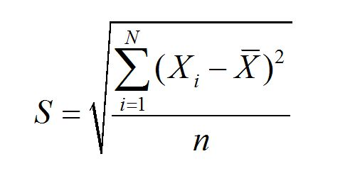

有了方差为什么还需要标准差？
04 Sep 2018知乎原回答：有了方差为什么需要标准差？
什么是方差？
方差是用来衡量数据离散程度的一个统计值，计算公式：

可以看出，方差的计算使用了数据集的所有数值，而不只是个别极值（如极大值和极小值），因此方差可以很好的反映数据的整体离散程度。
从公式理解，方差是数据偏离平均值距离的平方的平均值。可为什么是偏离平均值距离的平方的平均值，而不是偏离平均值距离的平均值呢？直觉上后者更容易理解才对。
完全正确，因此就有了标准差，对方差取平方根就得到了标准差:

标准差同样反映数据的离散程度，但因为它跟原始数据为同一个量纲，更加符合我们的直觉，也更方便解释。
例如我们可以说小明比全班平均身高高 0.1m (标准差)，但不能说小明比全班身高高 {0.1}^2m （方差)。
以上即方差和标准差的联系和区别。